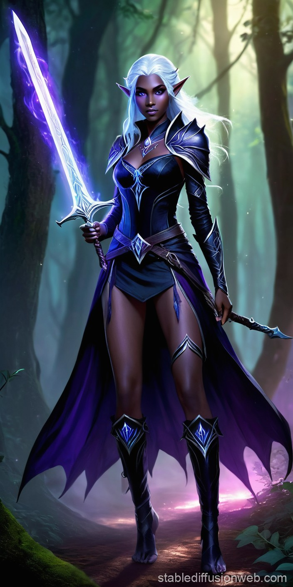
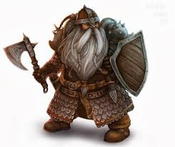
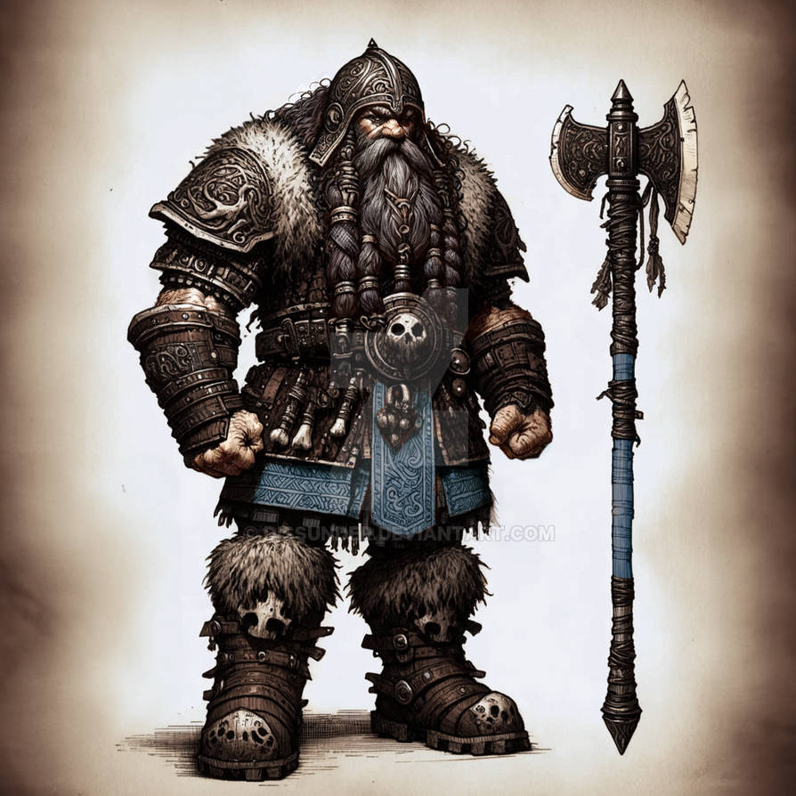

Popular DnD Races
1. Elf
.avif)
Elves are known for their grace, agility, and keen senses. They have a natural affinity for magic and are often skilled archers. They are known for their grace and beauty, as well as their deep connection to nature. Elves live for centuries and are often seen as wise and knowledgeable beings.
Elves have a variety of subraces, including High Elves, Wood Elves, and Drow (Dark elves). Each subrace provides unique abilities, such as Darkvision for Drow, or increased movement speed for Wood Elves.
2. Dwarf
Dwarves are stout and hardy, known for their craftsmanship and combat skills. They are often found in mountainous regions and are skilled miners and blacksmiths. They also have a deep love for stone work and engineering. Dwarves are known for their resilience, strength, and deep connection to the earth. They have a strong sense of honor and loyalty, making them reliable allies.
Dwarves have two main subraces: Hill Dwarves and Mountain Dwarves. Hill Dwarves are known for their wisdom and resilience, while Mountain Dwarves are known for their strength and combat prowess.